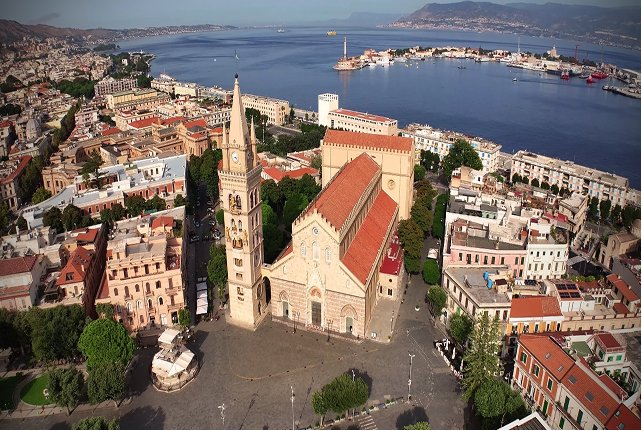
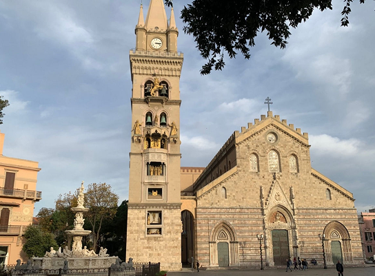
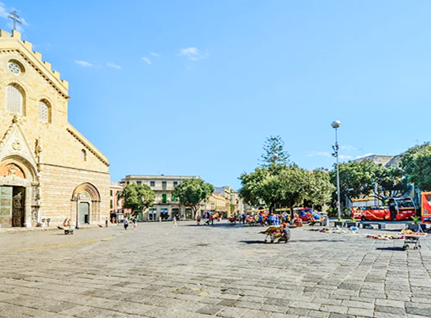
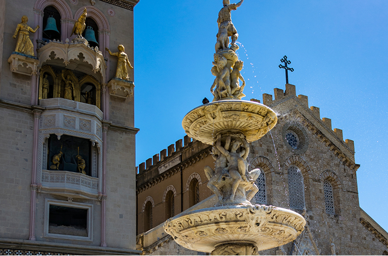

Il cuore storico
Piazza Duomo è il centro storico e religioso della città di Messina. Ampia e luminosa, rappresenta uno dei luoghi più importanti e frequentati della città. Qui si incontrano storia, arte e vita quotidiana, in uno spazio ricco di significato. La piazza è dominata dalla maestosa Duomo di Messina, dedicata a Santa Maria Assunta. La cattedrale, più volte ricostruita dopo terremoti e bombardamenti, conserva uno stile imponente e affascinante che testimonia la forza e la resilienza della città. Ogni giorno le sue statue animate attirano numerosi visitatori, offrendo uno spettacolo unico e suggestivo.
Al centro della piazza si erge la splendida Fontana di Orione, considerata uno dei capolavori del Rinascimento siciliano; la fontana arricchisce la piazza con eleganza e valore artistico. La sera, l’illuminazione rende l’atmosfera ancora più suggestiva, trasformando Piazza Duomo in un luogo affascinante e simbolo dell’identità messinese. La piazza è anche sede di importanti celebrazioni religiose. Oltre ai monumenti principali, Piazza Duomo offre scorci e dettagli architettonici che raccontano la storia della città. I palazzi con le loro facciate eleganti e balconi decorati, mostrano l’abilità artigianale e lo stile che caratterizza Messina.


arte e vita in piazza Duomo
Passeggiare lungo i lati della piazza permette di ammirare le pietre scolpite, le statue e le decorazioni che narrano secoli di storia cittadina, rendendo ogni visita un’esperienza culturale e sensoriale completa. Durante le festività religiose, la piazza diventa il cuore pulsante della città. Processioni solenni, celebrazioni liturgiche e concerti all’aperto animano lo spazio, creando un legame profondo tra cittadini e visitatori. La piazza si trasforma in un palcoscenico naturale dove la storia, l’arte e la vita quotidiana si fondono, offrendo spettacoli che rimangono impressi nella memoria di chi li osserva.
Infine, Piazza Duomo non è solo un luogo da ammirare, ma anche da vivere. Numerosi caffè, gelaterie e negozi nelle vicinanze invitano i turisti e i cittadini a fermarsi e immergersi nella vita della città. Passeggiando tra le vie circostanti, è possibile cogliere i profumi, i colori e i suoni di Messina, vivendo un’esperienza autentica che unisce arte, cultura e socialità, rendendo la piazza un simbolo della vitalità urbana e dell’identità messinese.
